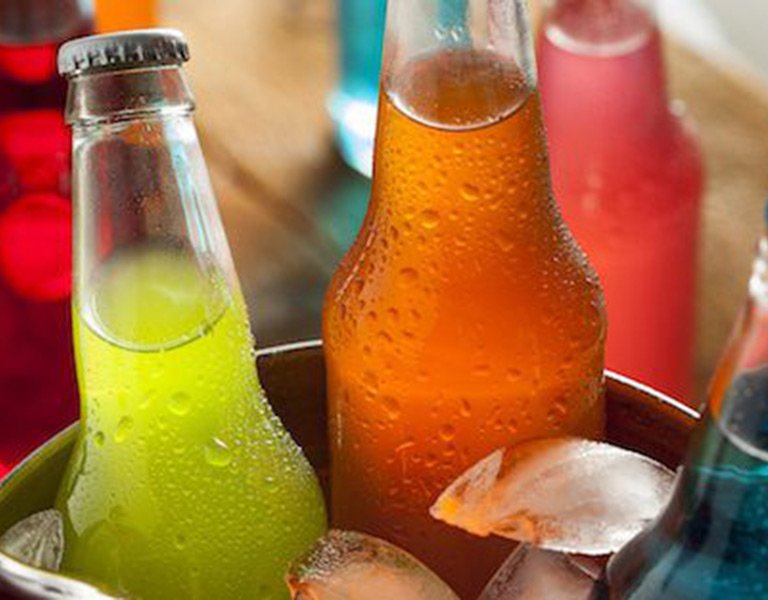

¿DE VERDAD SON TAN MALAS LAS BEBIDAS CON AZÚCAR?
Constituyen la fuente más importante de azúcar agregada en la dieta
POR JUAN SCALTTER 19/03/2019

Son varios estudios que habían demostrado que las bebidas carbonatas y no carbonatados, energetícas y deportivas (SSB por sus siglas en inglés) son la fuente más importante de azúcar en la dieta de muchos países (hasta un 36%).
Aunque su consumo ha estado disminuyendo en la última década, en los últimos tiempos ha habido un aumentado entre los adultos, con niveles de ingesta solo de SSSb que superan recomendación dietética de consumir no más del 10% de las calorías diarias de los azúcares agregados. La ingesta de SSB también está aumentando en los países en desarrollo, impulsada por la urbanización y la comercialización de este tipo de bebidas.
Un reciente estudio, publicado en Circulation u lederado por Vasanti Malik, señala que el consumo de una a cuatro bebidas azucaradas por mes se relaciona con un aumento del 1% en el riesgo de muerte prematura por enfermedades cardiovaculares (ECV), pero si son dos o más por diía el riesgo aumenta en un 21%
El estudio analizó los datos de 80.647 mujeres y 37.716 hombre a lo largo de más de 20 años. Cada dos años los voluntarios era sometidos a un control médico
Los resultados también mostraron que, en comparación con los bebedores ocacionales de bebidas azucaradas, los que bebían dos o más porciones por día, tenía un riesgo 31% más alto de muerte prematura por ECV. Cada porción adicional por día vinculaba con un 10% más de riesgo de muerte prematura.
"Nuestros resultados - conculye Malik en un comunicado - brindan más apoyo para limitar el consumo de bebidas azucaradas y reemplazarlas por otras bebidas, preferiblemente agua, para mejorar la salud general y la longevidad".